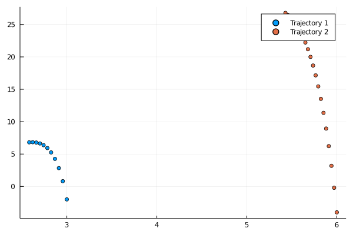

Multiple Trajectories for Koopman Approximation
Lets consider the case of approximating a Koopman Operator based on multiple trajectories. We assume pairs $(x_i, \dot{x}_i)$ of the measured state space trajectory and its time derivative where $i$ denotes a single measurement.
Lets create our artificial measurements for a system with a slow and fast manifold, for which there exists an analytical solution of this problem.
using DataDrivenDiffEq
using ModelingToolkit
using OrdinaryDiffEq
using LinearAlgebra
using Plots
gr()
function slow_manifold(du, u, p, t)
du[1] = p[1]*u[1]
du[2] = p[2]*(u[2]-u[1]^2)
end
u0 = [3.0; -2.0]
tspan = (0.0, 3.0)
p = [-0.05, -1.0]
problem = ODEProblem(slow_manifold, u0, (0f0, 3f0), p)
sol_1= solve(problem, Tsit5(), saveat = 0.3)
X_1 = Array(sol_1)
DX_1 = sol_1(sol_1.t, Val{1})[:,:]
problem = ODEProblem(slow_manifold, 2f0*u0, (0f0, 2f0), p)
sol_2 = solve(problem, Tsit5(), saveat = 0.1)
X_2 = Array(sol_2)
DX_2 = sol_2(sol_2.t, Val{1})[:,:]Note that we varied the inital conditions and the measurement time. The resulting trajectories are shown below.

In this paper on the Dynamic Mode Decomposition its pointed out that the overall ordering of the snapshots does not matter, as long as the specific pair is consistent. This means we can simply append the trajectories and use the new array to derive the approximation.
X = hcat(X_1, X_2)
DX = hcat(DX_1, DX_2)2×32 Array{Float64,2}:
-0.148881 -0.148881 -0.146664 … -0.274866 -0.273495 -0.272131
9.38212 9.38212 6.72424 4.29134 3.59657 2.97117In the next steps, we simply create a basis for the approximation and proceed as usual. At first we create the basis and afterwards feed it to the function for approximating the Koopman generator.
@variables u[1:2]
observables = [u; u[1]^2]
basis = Basis(observables, u)
approximation = gEDMD(X, DX, basis)Which results in the following eigenvalues of the system and its approximation.

This procedure works for all methods which take two snapshot matrices as input arguments.